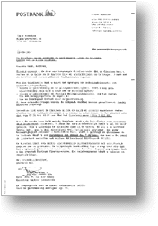
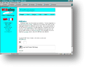

|
ОБЩИЕ СВЕДЕНИЯ
ПРОЕКТ
СКОРОСТЬ
КОМПОНОВКА
согласованность
< компоновка >
таблицы HTML
таблицы стилей
фреймы
навигация
ссылки
ГРАФИКА
|
|
Лист бумаги чаще всего держат вертикально. Ширина компьютерного экрана немного больше высоты. Именно под такой размер и надо адаптировать web страницу. Наиболее важная информация должна быть видна сразу. Если страница длиннее одного экрана, это должно быть понятно посетителю.
Некоторые дизайнеры советуют ограничивать размер страницы размерами экрана. Исследования показывают, что с большей вероятностью посетители щелкают на ссылках, еще до того, как пролистают страницу до конца.

|
 |
| Бумага: вертикальная |
Экран: горизонтальный |
Если страница состоит в основном из текста, текст должен иметь ширину примерно 10 - 12 слов. Шире или уже, и читать будет неудобно. Длинные строки затрудняют переход с конца строки на начало следующей. Иногда глаза будут переходить в начало той же самой строки. Можно также пропустить строку, пропустив тем самым часть текста.
Короткие строки приводят к растягиванию предложения на много строк. В результате слова теряют взаимосвязь. Попробуйте написать предложение так, чтобы каждое слово было на отдельной строке. Покажите его кому-нибудь. Скорее всего, ему придется перечитывать предложение дважды, прежде чем он поймет, о чем речь.
Управлять размером символов на экране можно лишь до некоторой степени. Обычно браузеры отображают текст шрифтом Courier размером 12 пунктов. Но пользователь волен выбирать шрифт на свой вкус. Я, например, предпочитаю шрифт Helvetica размера 11.
Высокие разрешения требуют шрифта 14 пунктов и даже больше. В противном случае текст получается слишком мелким и неразборчивым. Старайтесь ориентироваться на наименьший типичный размер экрана и предполагать, что пользователь не поменяет стандартных установок.
Чтобы текст был разборчивым, он должен быть не шире 400 пикселей при разрешении экрана 640х480. Тем самым в запасе остается еще 240 точек, часть из которых займет окно браузера и линейки прокрутки. К тому же надо оставить поля по обеим сторонам текста. Это оставляет для использования полосу от 150 до 200 точек по ширине.
Заполнить это пространство можно по-разному. Можно расположить здесь картинки, заголовки, ссылки, меню или логотипы. Зачастую это место используют для размещения слева от текста цветной полосы. Вверху логотип компании, ниже меню со ссылками на связанные страницы этого же сайта. Это сильно упрощает навигацию. Такой способ использования лишнего пространства крайне эффективен.
|